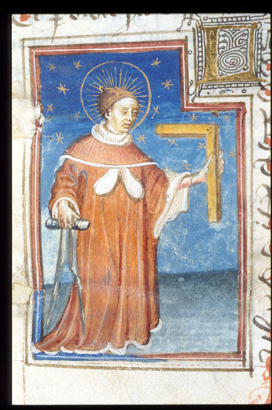
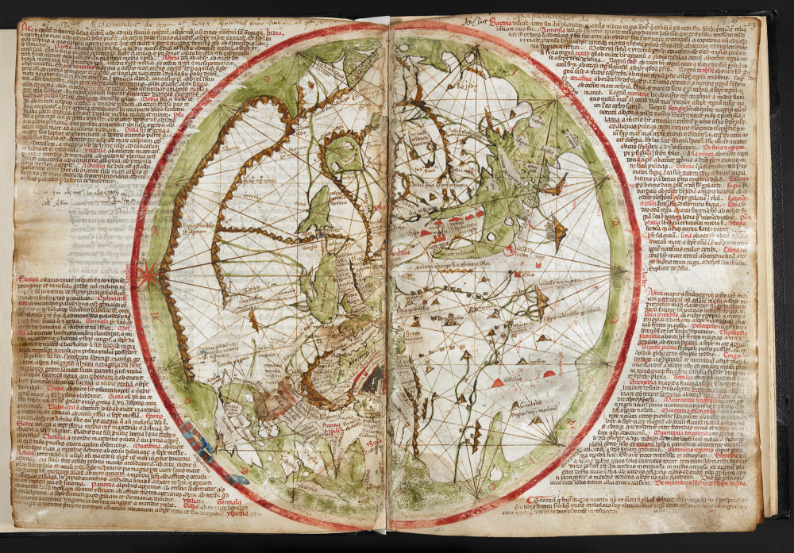
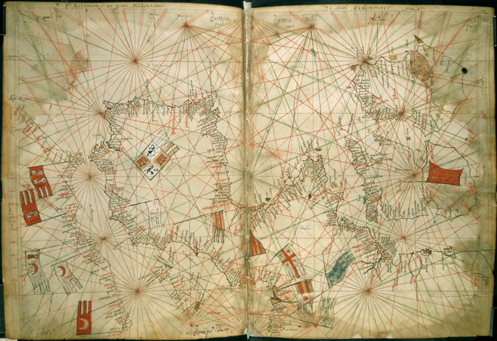
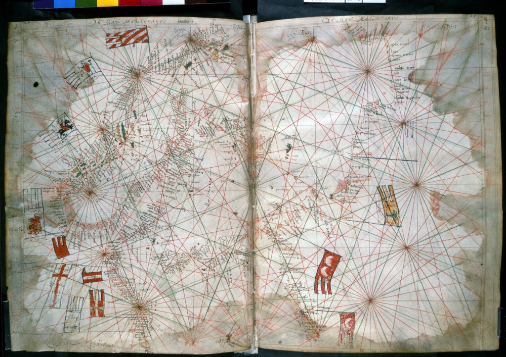
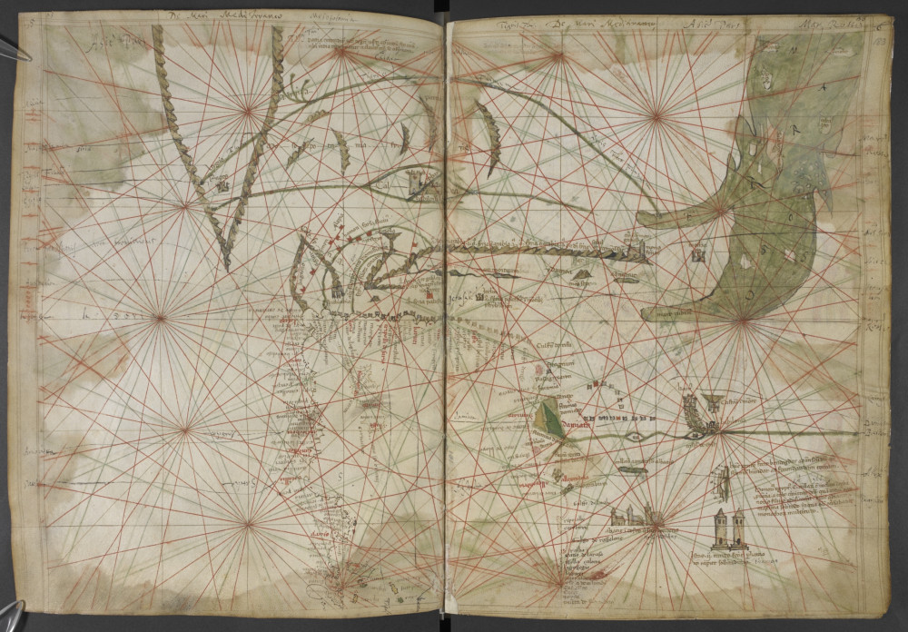
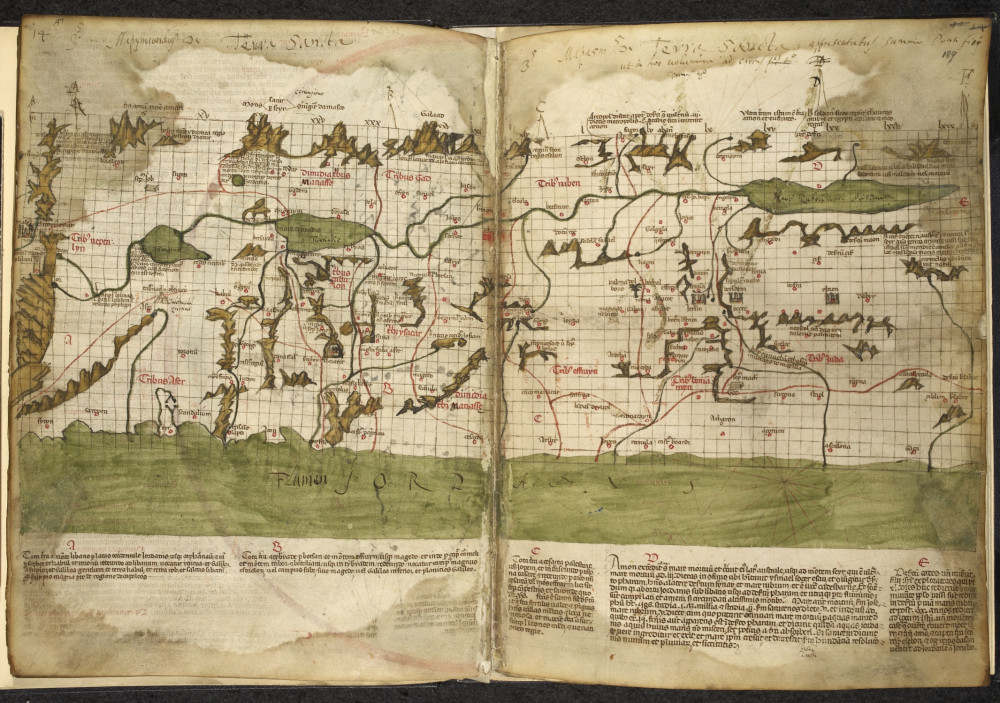
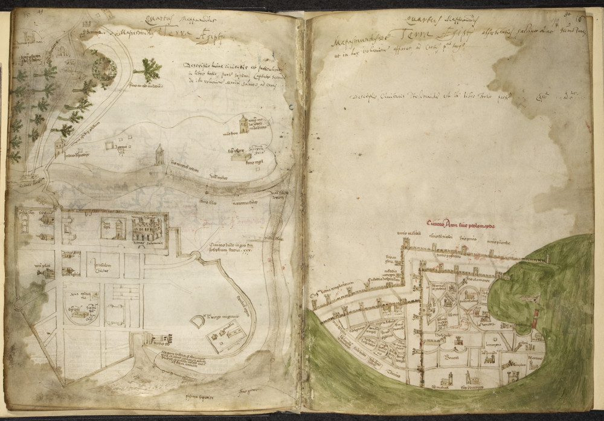

Применение портолан-карт в морской практике (продолжение)
Движенья нет, сказал мудрец брадатый.
Другой смолчал и стал пред ним ходить.
Сильнее бы не мог он возразить;
Хвалили все ответ замысловатый.
Но, господа, забавный случай сей
Другой пример на память мне приводит;
Ведь каждый день пред нами солнце ходит,
Однако ж прав упрямый Галилей.
А.С.Пушкин «Движение»

Фрагмент миниатюры из манускрипта Gautier de Metz «Image du Monde». Человек с компасом и угольником. Вторая четверть 15 века. British Library. Harley 334
В предыдущем повествовании мы уклонились от подробного рассказа о методе использовании морских карт, описанном в трактате Раймунда Луллия «Древо наук» (Arbor Scientiae). Это объясняется тем, что для понимания этих текстов требуется специальный подход, основанный на объяснении путей и способов проникновения математики в навигационное искусство в тринадцатом веке. Есть люди, которые, как мы видели ранее, находясь в трезвом уме, утверждают, что кругосветное плавание Фрэнсиса Дрейка осуществлялось «по интуиции», т.е. наугад. Можно только вообразить, что эти люди сказали бы о моряках тринадцатого века, которые осмеливались выходить в море за три столетия до Дрейка.
Для нас основной вопрос сейчас – использовались ли портолан-карты на борту корабля, и если использовались, то как. Джеймс Келли (1995) полагает, что карты почти наверняка использовались для следующих целей:
1 – Планирования путешествий.
Подтверждение такого использования портотлан-карт можно найти в работе венецианского географа, путешественника и политического деятеля Марино Санудо Старшего Liber secretorum fidelium crucis, которую он направил папе Иоанну XXII в сентябре 1321 года для обоснования плана нового крестового похода в Святую Землю. Комплект карт, приложенный к этому труду, исполнен, скорее всего, Пьетро Весконте. Он открывается картой мира ‘mappamundi’, исполненной в стиле морской карты

Далее идет портолан-карта Атлантического побережья и западного Средиземноморья , после чего карты центральной части Средиземного моря и Красного моря



Карту Восточного Средиземноморья из этого комплекта мы уже показывали в нашем рассказе о масштабах на портолан-картах.
Последними следуют карты Святой земли и план укреплений Акры и Иерусалима.


В наборе присутствует также карта Черного моря.
Полный набор карт для планирования стратегической операции группы стран на приморском направлении!
В принципе, на картах, предназначенных для планирования операций должны были оставаться следы планируемых маршрутов. Но учитывая большую стоимость карт, рабочие записи на них велись свинцовым карандашом (две части свинца и одна часть олова, тщательно откованные молотком). Такие записи легко удалялись хлебными крошками, универсальным ластиком того времени. Второй способ уберечь карту от порчи – использование кальки. В трактате «Книга об искусстве» (Il Libro dell'Arte) итальянского художника той эпохи Ченнино Ченнини (Cennino Cennini) дается подробнейшая инструкция по изготовлению кальки различными способами. При желании этой инструкцией можно легко воспользоваться и сегодня. Можно было также записывать в своем рабочем дневнике все отрезки маршрута, как это делал, например, Христофор Колумб во время своего третьего путешествия. Он записал курс вест-тень-зюйд, которым отряд следовал нк протяжении 850 лиг от острова Ферро, пока не приблизился, как считал Колумб, к Доминикане (на самом деле это было побережье Южной Америки), после чего записывал все изменения курса до прибытия в Испаньолу (Гаити). Правда, нет информации, использовал ли он при этом карту.
2 – Для наглядного представления положения корабля в море.
Процесс определения места корабля в море в то время начинался с пункта отправления. В старой русской штурманской лексике он назывался пунктом отшествия:
Тотъ Пунктъ, отъ котораго судно начинаетъ плаваніе называютъ Пунктомъ Отшествія, а тотъ до котораго судно, по окончанiи плаванія достигаетъ, пунктомъ Пришествія.
Шишков _ Морской словарь (по наукам до мореплавания относящимся) (1835).
Прошло сто лет, и адмирал К.И.Самойлов дает более корявое определение:
ОТШЕДШИЙ ПУНКТ
(Point left, point of departure) — пункт, из которого судно начало свое плавание.
Самойлов К. И. Морской словарь. - М.-Л. 1941
Задача рулевого состояла в том, чтобы удерживать судно на определенном направлении. Это начальное направление, в отсутствии компаса, могло определяться просто по створу двух ориентиров на берегу, например. А выдерживать начальное направление можно было по кильватерному следу, попутному потоку: просто следить, чтобы он оставался прямым. Правда, имеется существенное ограничение: море должно быть спокойным, чтобы попутный след быстро не разрушался, и, естественно, необходимо, чтобы было светлое время суток. Поэтому навигация в Средиземном море осуществлялась в основном в виду берегов, а пересечение моря проводилось по известным из опыта направлениям.
Появление компаса на борту кораблей существенно упростило задачу следования по заданному направлению. Хотя штурманы не сразу отказались от контроля курса по кильватерному следу. Лишь изобретение «сухого» магнитного компаса, магнитной стрелки на оси и компасной розы дало возможность рулевому переместиться с палубы в рулевую рубку, где он мог постоянно сверять курс корабля с показаниями компаса. В это же время появились первые математические таблицы и графические приемы, позволяющие не только следовать заданным курсом, но и возвращаться к нему, если волею ветра и течений корабль сносило в сторону.
В прошлый раз мы уже касались появления первых тригонометрических расчетов у Луллия.
Метод, описанный Луллием, в дальнейшем получил название Raxon de marteloio – «Правило мартелойо». Современные авторы не пришли к единому мнению, что означает термин marteloio.
Норденшельд, в частности, писал, что это название связано с обычаем «бить склянки», отмечать текущее время ударами в корабельный колокол, рынду, и испанское слово 'marteloio’ означает то, чем ударяют, «молоток». Raxon можно перевести как «счисление»; таким образом, 'raxon de marteloio' может означать навигационное счисление на каждый час, или на вахту. Келли к гипотезе Норденшельда добавляет, что в нашем случае под marteloio следует понимать не тот предмет, которым ударяют в корабельный колокол, и не человека, который это делает, а звук рынды, звон который сопровождает этот процесс. Учитывая, что по склянкам осуществлялась смена вахтенной смены, к звону рынды добавлялся шум множества людей, которые в это время находились на палубе. Таким образом, marteloio означало, в конечном итоге, смену вахты. А так как при смене вахты на палубе находилось как минимум две дежурные смены, то штурман пользовался этим моментом для перемены галса при лавировании корабля, операции, требовавшей большого количества матросов.
Мы не знаем, было ли это так на самом деле, но версия достаточно убедительная. Результат смены галса записывался в рабочий блокнот или фиксировался на специальной чертежной доске. Один или два раза в сутки, на восходе или на закате (как это делал Колумб), подсчитывался итоговый результат всех произведенных маневров, который переносился на карту для установления нового местоположения корабля. Чтобы предохранить дорогую карту от повреждений, прокладку могли вести не на ней, а на кальке или специальной чертежной доске. И лишь в отдельных случаях результаты этой работы переносились на карту с помощью циркулей.
Продолжим обсуждать эту тему в следующий раз.